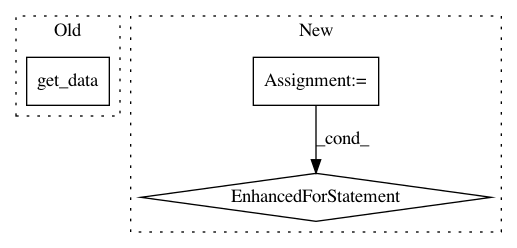

c8fbaf68205c4871298ca323a820c61164c096c5,tests/handler_early_stopping_test.py,EarlyStopperTest,test_median_smoothing,#EarlyStopperTest#,61
Before Change
def test_median_smoothing(self):
should_stop = check_should_stop(mode="median_smoothing",
performance_history=get_data(),
patience=8)
self.assertTrue(should_stop)
After Change
def test_median_smoothing(self):
data = []
for i in range(10):
data.extend(np.arange(0, 8))
data.extend(np.arange(1, 9)[::-1])
should_stop = check_should_stop(mode="median_smoothing",
performance_history=np.arange(0,20) / 10,
patience=8)
self.assertTrue(should_stop)
In pattern: SUPERPATTERN
Frequency: 3
Non-data size: 3
Instances
Project Name: NifTK/NiftyNet
Commit Name: c8fbaf68205c4871298ca323a820c61164c096c5
Time: 2019-06-06
Author: Irme_G@hotmail.com
File Name: tests/handler_early_stopping_test.py
Class Name: EarlyStopperTest
Method Name: test_median_smoothing
Project Name: ellisdg/3DUnetCNN
Commit Name: e6a8a482f15803b24fc4bda6e2a0bd001ca77c87
Time: 2017-04-07
Author: david.ellis@unmc.edu
File Name: data.py
Class Name:
Method Name: read_subject_folder
Project Name: nilearn/nilearn
Commit Name: f5d882c106aa2202d03ead930f7af2ee5d612b4c
Time: 2019-04-18
Author: jerome-alexis.chevalier@inria.fr
File Name: nilearn/regions/rena_clustering.py
Class Name:
Method Name: _compute_weights